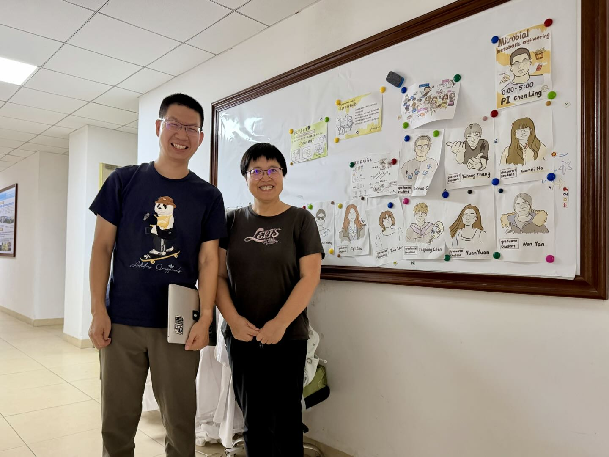
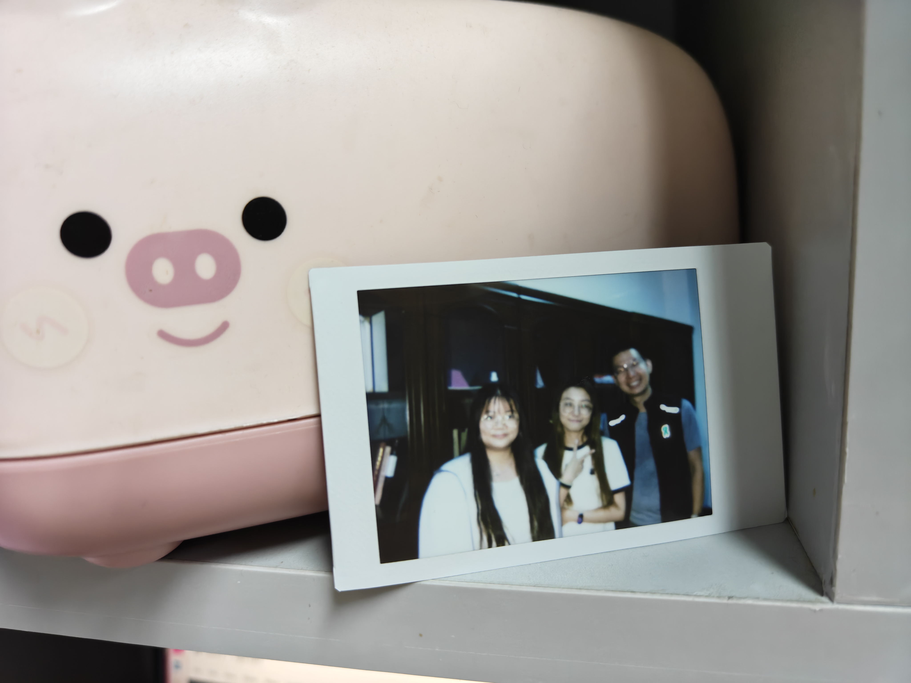
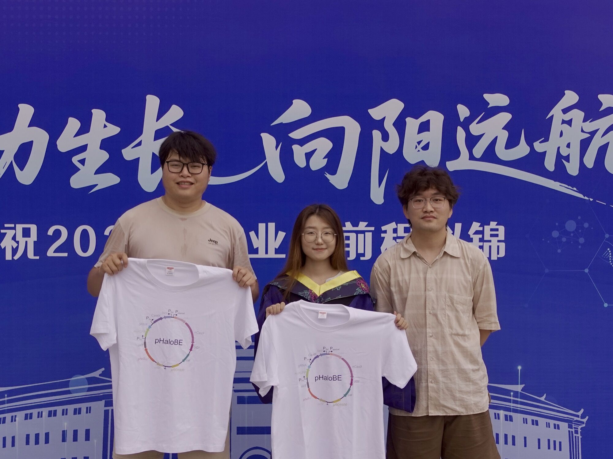
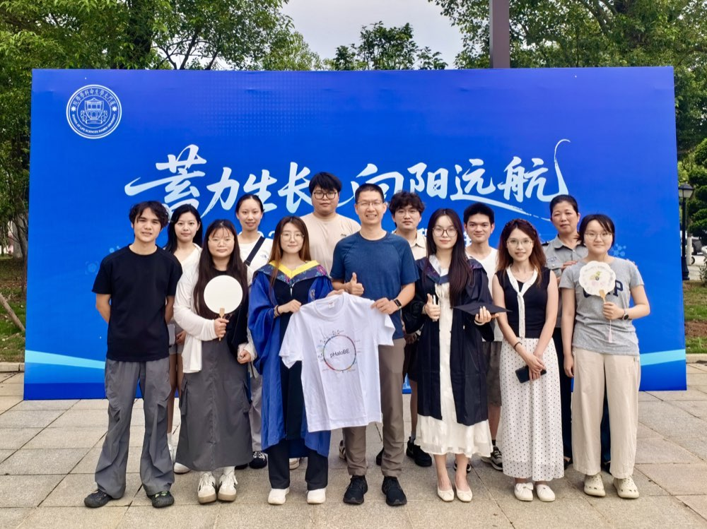
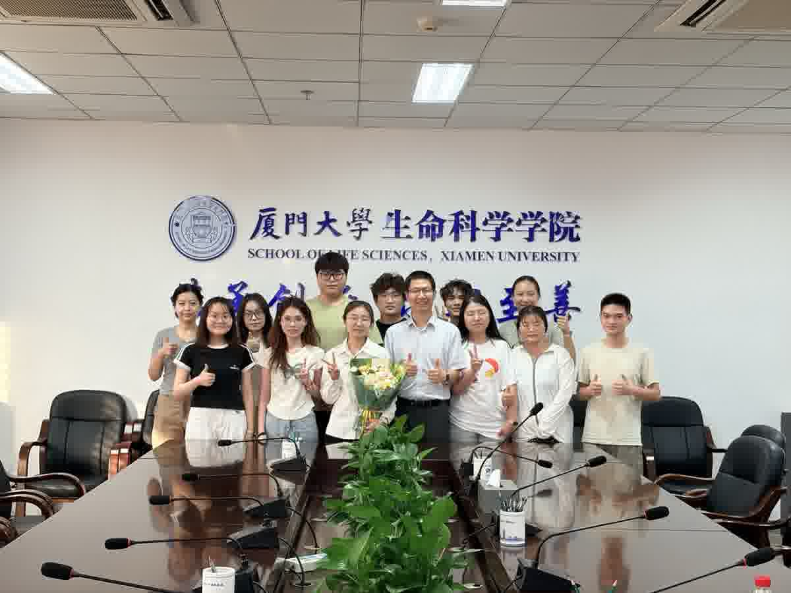
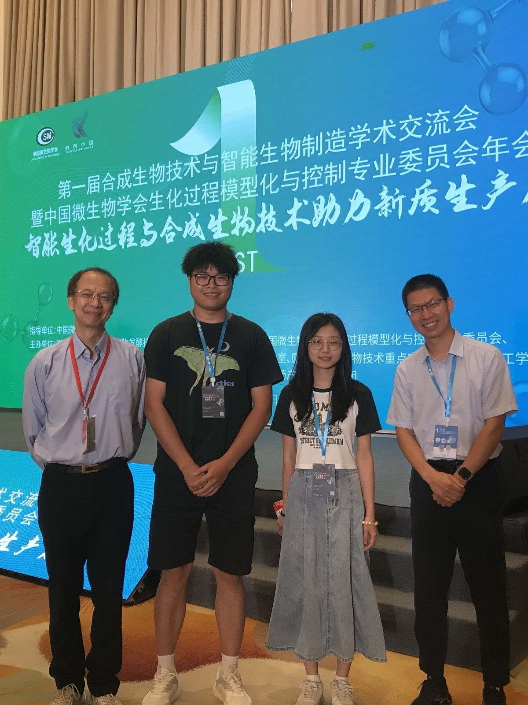

🧬 Visit from Dr. Caixia Gao — July 18, 2026. Dr. Caixia Gao from the Institute of Genetics and Developmental Biology, Chinese Academy of Sciences, visited the Ling Lab. Group photo with Dr. Chen Ling. 🧬

Yuan Yuan's last day in the lab — officially the last day as a member of the Ling Lab before heading to Nanjing GeneIII Biotech. Thank you for all the wonderful memories, Yuki! 🎉🧪

Co-first authors of our pHaloBE/pHaloFM paper published in Metabolic Engineering — Yu-Hang Zhang, Yuan Yuan (creator of pHaloBE, graduated 2026), and Bai-Tao Chen. Yuan Yuan's contributions to pHaloBE development and Bai-Tao's analysis work were instrumental to this study. 🧬

🎓 Celebrating Yuan Yuan's graduation and Zi-Han's new journey! After completing her master's in our lab, Yuan Yuan will embark on the next chapter of her career, while Zi-Han continues as a PhD student in the Ling Lab. Wishing both of them all the best in their future endeavors! 🎉

🎉 Yuan Yuan successfully passed her master's thesis defense on May 27, 2026 — the first graduate from our lab! Congratulations, and best wishes for the journey ahead.

With Yuan Yuan, Bai-Tao, and PhD supervisor Prof. Guo-Qiang Chen at a meeting in Fuzhou — August 3–4, 2024 🧬